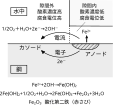
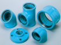

2022年
問題122 給湯設備に使用される材料に関する次の記述のうち，最も不適当なものはどれか．
（1）ステンレス鋼管の隙間腐食は，不動態化によるものである．
（2）金属材料の曲げ加工を行った場合には，応力腐食の原因となる．
（3）銅管は，管内の流速が速いと潰食が生じる．
（4）耐熱性硬質ポリ塩化ビニルライニング鋼管には，管端防食継手を使用する．
（5）樹脂管は，使用温度が高くなると許容使用圧力は低くなる．
2022年
問題122 正解（1） 頻出度AAA
不動態化とは，金属表面に酸化皮膜ができることによって内部の金属と外部の空気や水分が直接触れるのを防ぎ，さらなる腐食やサビの発生を抑えられることである．
テンレス鋼管は，銅管などと同じように，酸化被膜による母材の不動態化によって耐食性を維持しているが，フランジの接合部などの隙間には普段水・湯が流通せず，酸素の供給が不十分となり，隙間外部との間で酸素濃度に差が生じる．隙間内部の酸素濃度の低い方がアノード，高い方がカソードとなる酸素濃淡電池回路が成立し，塩化物イオンなどが存在すれば，隙間内部の不動態被膜が破壊され，隙間腐食が進行する（2022-122-1図参照）．
2022-122-1図 隙間腐食（鋼材の例）

-(2) 金属に引張応力が残存していると，不働態被膜が振動や酸によって破壊され腐食が進行することがある．これを応力腐食あるいは応力腐食割れという．応力が残存しやすい，硬いステンレス鋼に発生する（柔らかい銅は応力が残存しにくいので発生は少ない）．
-(3) 銅管においては，一過式配管や返湯管を設けていない給湯管においては腐食の発生がほとんどないが，常時湯が循環している中央式給湯配管においては腐食が発生する場合がある．
銅管の腐食には潰食と孔食とがある．管内の水の流速が速いと酸化被膜が形成されず，流れ方向にえぐられたような潰食といわれる腐食が生じる．伸張性に富む＝やわらかい銅は特に要注意で，管内の流速を他の配管材より小さくする．給湯管の流速は一般的に1.5m/s以下とされるが，銅管の返湯管では潰食を考慮して1.2m/s以下とする．
-(4) 管端防食継手を使用することによって，ねじ切りして露出した配管の金属面が内部を流れる液体に直接触れることがなくなる（2022-122-2図参照）．
2022-122-2図 管端防食継手の例

出典 日本継手株式会社
https://www.nippon-pf.co.jp/pw/w_coretsugite/